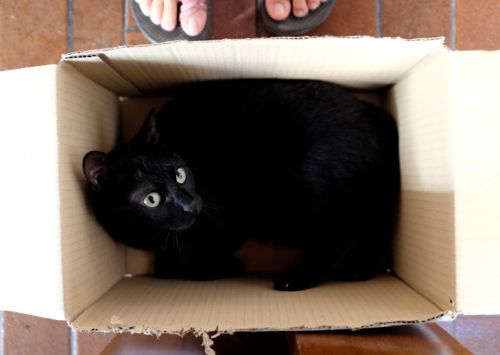

Haruki Murakami
Kafka on the Shore
After getting more-or-less settled into our new apartment in Monti, I picked Kafka on the Shore by Haruki Murakami out of the boxes and have flown through it since. The Japanese writer’s name has been online a lot in the last few weeks because of his upcoming summer release of Colorless Tsukuru Tazaki and His Years of Pilgrimage in English, and so it seemed destined that I not put this other book on a shelf.
Kafka on the Shore was written 10 years ago and it is as much a page turner, where the plot builds to an ever questionable climax, as it is a strange and complicated story, where the line between reality and dreams, reality and subconscious become blurry.
The straightforward drive of the plot is more in keeping to the author’s simplified voice than with the story. Even when the characters are talking about something complicated (the blurry boundary between reality and what lies behind it) they do so in a very disarming way. It would seem like the meaning of the symbols and the meaning behind the other worldly events would also be as simple to decipher. But that’s not the case.
The following quote is from the Paris Review interview with Murakami in 2004, after Kafka on the Shore was published.
Interviewer: But do you choose the voice that it’s told in, that deadpan, easy-to-follow voice? Do you choose that?
Murakami: I get some images and I connect one piece to another. That’s the story line. Then I explain the story line to the reader. You should be very kind when you explain something. If you think, It’s okay; I know that, it’s a very arrogant thing. Easy words and good metaphors; good allegory. So that’s what I do. I explain very carefully and clearly.
(Ha! What seemingly simple advice for a writer.)
That is perhaps why sex in Murakami is sex and violence is violence, no subtlety and no side stepping any uncomfortable, gory scenes. The reader must go through every detail of Johnnie Walker cutting out the beating heart of cats and then eating them (which I don’t like) and the paragraph-long descriptions of character (which I like). And if Murakami’s language was as liquid the presence of Mr. Nakata in this world, the reader would be in trouble indeed.
The other night I was talking to friend about Murakami and he said that once he learned about Shinto, Japan’s ancient, nature religion, Murakami’s books made a lot more sense. John Updike does a good job of explaining the connection in this review of Kafka on the Shore written for the New Yorker. Though even without this explanation, the characters’ journeys in and out of a spirit world resonate with me. There is a truth to them that can’t easily be explained. There are times when mackerel need to fall from the sky and people have to go to places that don’t exist, and it is Murakami who makes these impossible events actual, if only in his books.

Black cat in book box.
· · · · · · · · · · · · · · · · · · · ·